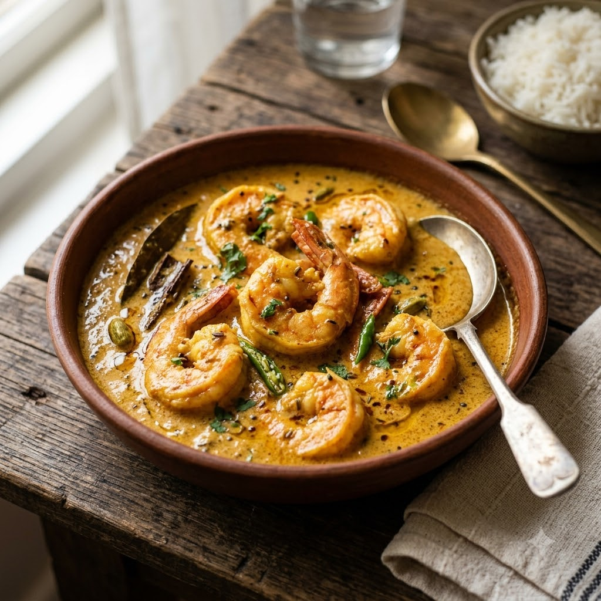

Prawn Malai Curry (Creamy Coconut Prawn Curry)

Prawn Malai Curry (Creamy Coconut Prawn Curry)
Chef Magic – Sauté Auto 22 min — Serves 4
Gluten-Free • High-Protein • Bengali
🧑🍳 Chef Magic🍽 Serves 4
Prep ahead: Marinate the prawns with a little turmeric and salt for 10 minutes before cooking.
Ingredients
- 500g prawns, peeled and deveined
- 1 onion, finely sliced
- 1 tbsp ginger-garlic paste (adrak-lehsun paste)
- 1 cup coconut milk
- 1/2 tsp turmeric (haldi)
- 1 tsp garam masala
- 2 green chillies (hari mirch), slit
- 2 tbsp mustard oil (sarson ka tel)
- Salt to taste
- Chopped coriander (dhania) to garnish
Method
1Add mustard oil to the jar; select Sauté (Speed 2–4, ~130–160°C) and cook the onion for 6 minutes until golden.
2Add ginger-garlic paste and turmeric; sauté 2 minutes.
3Add the coconut milk, green chillies and salt; simmer on Sauté (Speed 1–2, ~100–110°C) for 6 minutes until slightly thickened.
4Gently add the prawns and garam masala; sauté for 6 minutes until just cooked through — avoid overcooking or they turn rubbery.
5Garnish with coriander and serve with steamed rice.
Tip: Prawn Malai Curry is meant to be lightly sweet and mild — don’t oversalt or over-spice the gravy.